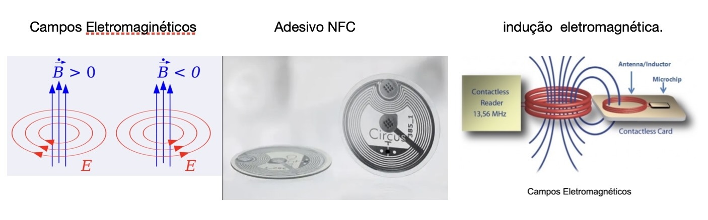
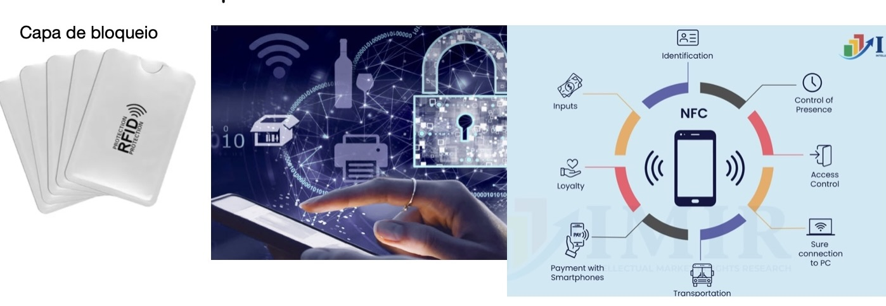
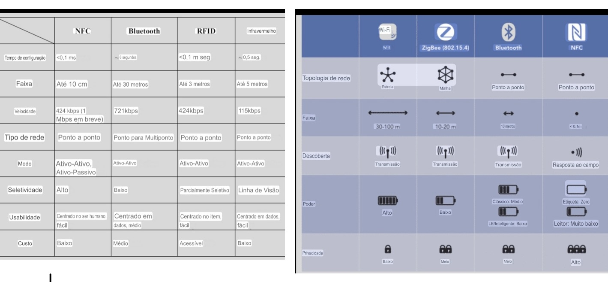
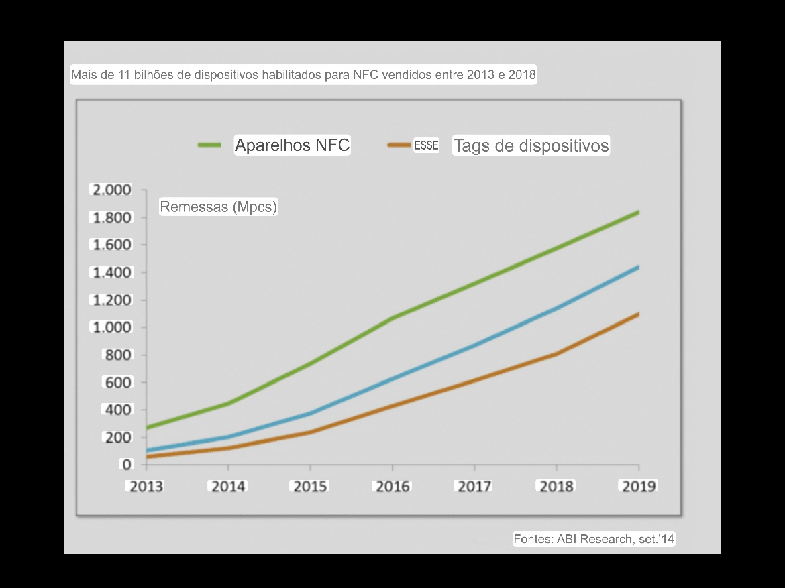
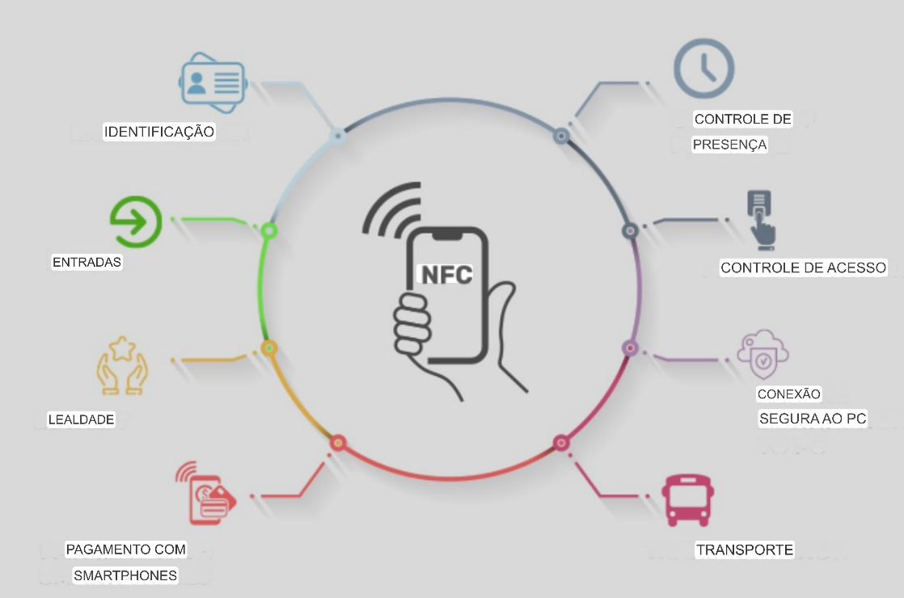

Introdução
A tecnologia Near Field Communication (NFC) é uma forma de comunicação sem fio de curto alcance, permitindo a troca de dados entre dispositivos que estejam próximos, geralmente a uma distância de até 10 centímetros.
Sua aplicação se tornou popular em pagamentos por aproximação, cartões de transporte, controle de acesso e até automação residencial. Este site explica, de forma clara e detalhada, como essa tecnologia funciona, seus benefícios, desafios, segurança e perspectivas para o futuro.
Funcionamento
O NFC opera com base na indução de campo eletromagnético. Existem dois dispositivos: um ativo e outro passivo. O dispositivo ativo gera um campo eletromagnético capaz de alimentar o dispositivo passivo, permitindo a troca de informações sem bateria.
Ele opera na frequência de 13,56 MHz e permite taxas entre 106 Kbps e 424 Kbps. Existem três modos principais:
- Modo Leitor/Gravador: O smartphone lê ou escreve dados em uma tag NFC.
- Modo Peer-to-Peer: Dois dispositivos trocam informações de forma bidirecional.
- Modo Emulação de Cartão: O smartphone funciona como um cartão para pagamentos.

Segurança e Privacidade
Embora o NFC seja seguro devido ao seu curto alcance, ele não está completamente isento de riscos. A segurança é fundamental em pagamentos, autenticação e compartilhamento de dados sensíveis.
Principais ameaças:
- Interceptação (Eavesdropping): Captura de dados durante a comunicação.
- Modificação de Dados: Alteração das informações transmitidas.
- Skimming: Leitura não autorizada de dados NFC.
- Relay Attack: Conexão falsa entre leitor legítimo e vítima distante.
- Clonagem: Dispositivo NFC clonado para se passar por outro.
Medidas de proteção:
- Criptografia forte (AES, RSA).
- Autenticação por biometria ou senha.
- Limitação do alcance físico.
- Sistemas antifraude nas operadoras.

Comparação com Outras Tecnologias
O NFC é frequentemente comparado com QR Code, Bluetooth e RFID. Veja a tabela comparativa:

| Característica | 🔵 NFC | 📷 QR Code | 🔷 Bluetooth | 📶 RFID |
|---|---|---|---|---|
| Alcance | até 10 cm | variável | até 10 m+ | até 100 m |
| Velocidade | 424 Kbps | baixa | alta | média |
| Segurança | alta | baixa | média | média |
| Pareamento | não | não | sim | não |
| Consumo | muito baixo | nenhum | alto | baixo |
| Bidirecional | sim | não | sim | não |
História e Evolução do NFC
Da criação ao uso massivo em bilhões de dispositivos ao redor do mundo.
Charles Walton patenteia o RFID, tecnologia base do NFC.
Sony e Philips desenvolvem juntos o padrão NFC.
Criação do NFC Forum para padronizar a tecnologia globalmente.
Nokia lança o 6131, primeiro smartphone com NFC integrado.
Google lança o Android Beam com suporte a NFC nativo.
Apple lança o Apple Pay com NFC, popularizando pagamentos por aproximação.
Mais de 2 bilhões de dispositivos com NFC em uso no mundo.
Futuro do NFC
As perspectivas para o NFC são bastante promissoras. A adoção de pagamentos por aproximação vem crescendo exponencialmente, principalmente após a pandemia de COVID-19.
- Automóveis: Destravamento de portas e ignição de veículos.
- Saúde: Armazenamento de informações médicas e prontuários.
- Casas inteligentes: Automatização de rotinas domésticas.
- Eventos e transporte: Controle de acesso e bilhetagem eletrônica.
O futuro do NFC caminha para a integração total no dia a dia, com forte tendência de expansão nos próximos anos.

Conclusão
A tecnologia NFC revolucionou a maneira como interagimos com dispositivos e realizamos transações no dia a dia. Seu funcionamento simples, seguro e rápido permite aplicações que vão desde pagamentos até automação residencial.
Apesar dos desafios de segurança, as soluções existentes garantem proteção adequada quando aliadas às boas práticas. O NFC já está consolidado como tecnologia essencial para a mobilidade digital.

Perguntas Frequentes
Quiz — Você sabe tudo sobre NFC?
Responda 5 perguntas e descubra seu nível de conhecimento!
Referências
- RUIZ, R. NFC - Comunicação por aproximação. Revista Tecnologia Digital, 2021.
- MELO, F. Segurança em Tecnologias Sem Fio. São Paulo: Editora Tech, 2022.
- GOMES, A.; SANTOS, L. Aplicações de NFC na Indústria e no Cotidiano. IEEE Conference Proceedings, 2020.
- KUMAR, A. Near Field Communication: Principles and Applications. Wiley, 2013.
- GOOGLE ACADÊMICO. Diversos artigos sobre NFC, acessados em 2025.